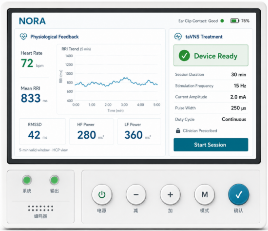
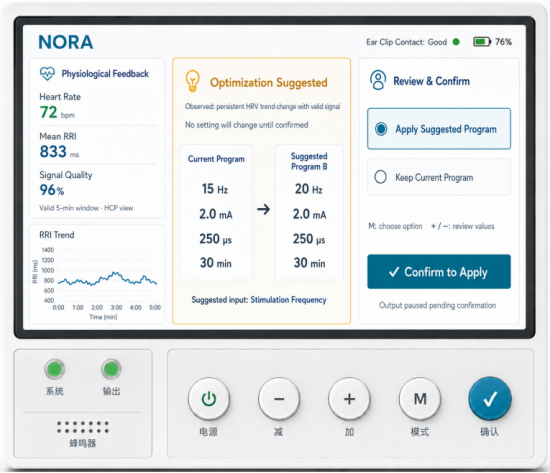
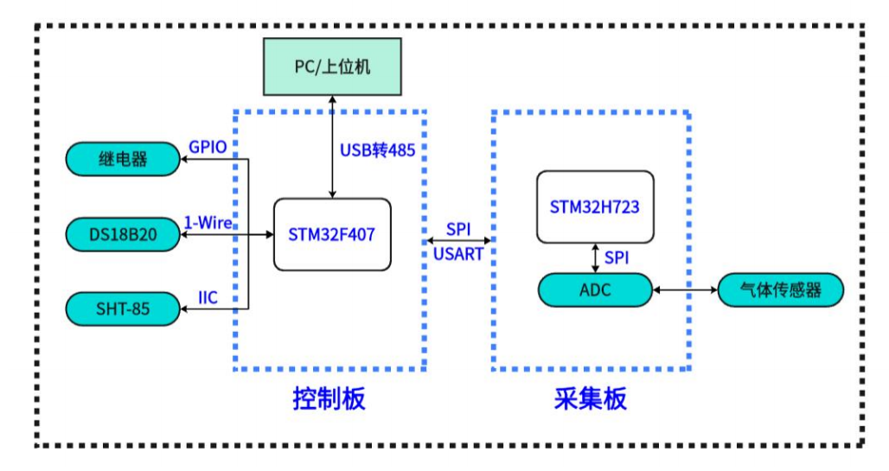
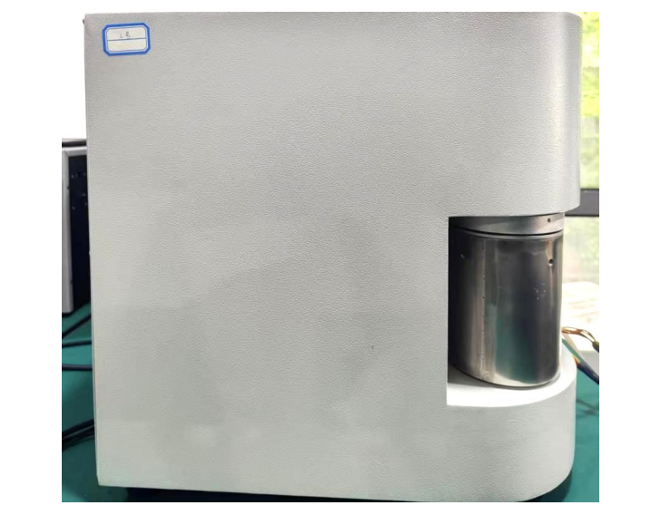
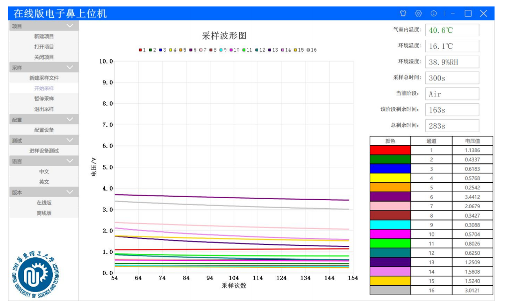
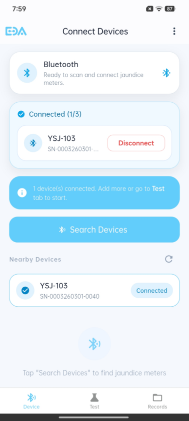
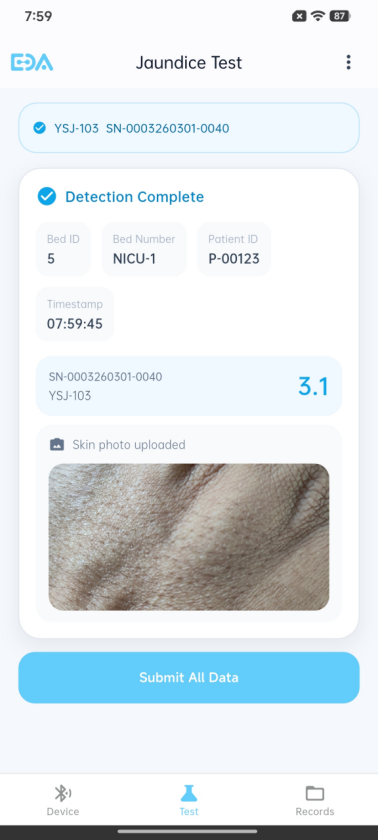
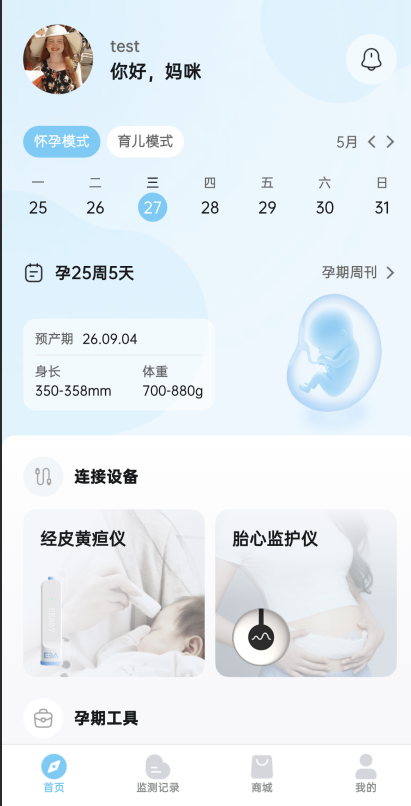
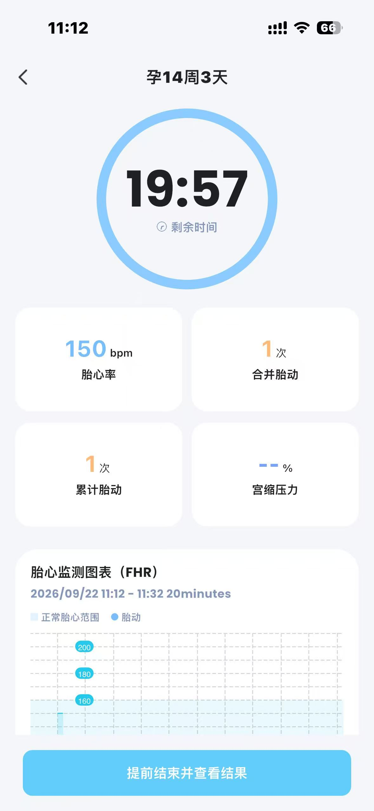
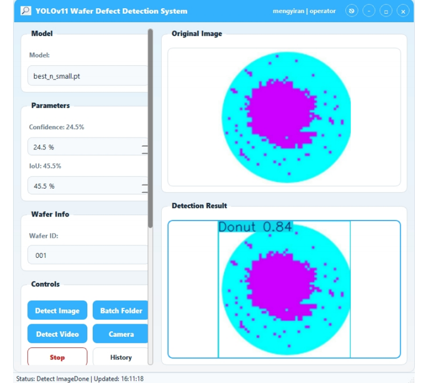

专注医疗硬件与消费电子配套软件产品设计，覆盖设备交互、蓝牙连接、数据采集、 离线存储与云端同步等软硬协同全流程。熟悉串口通信、传感器数据采集与设备控制。
我是孟依然，香港大学电气与电子工程硕士在读，华东理工大学信息工程本科。 具备软硬件交叉背景——既能做硬件配套软件的产品设计，也理解串口通信、传感器采集、 继电器控制等底层技术原理。
过去一年多，我在亿杉医疗负责胎心监护仪、经皮黄疸仪等医疗硬件的配套软件产品设计， 独立完成过电子鼻设备上位机软件开发，熟悉「设备连接 → 数据采集 → 可视化 → 存储同步」 的完整软硬协同链路。
负责 taVNS 治疗设备的屏幕 UI 与物理按键交互设计，覆盖耳夹检测、参数设置、 治疗监测、优化建议等完整设备状态流程，输出中英文双语高保真原型。
设备需配合耳夹传感器实时监测生理信号，并根据信号质量动态调整刺激参数。 设备屏幕小、物理按键少（电源/加减/模式/确认），要求交互逻辑清晰、状态反馈明确， 确保医护和患者都能快速理解当前设备状态。


独立完成 16 通道气体传感器电子鼻设备的系统架构设计与配套上位机软件开发， 基于 Qt 框架实现硬件控制、实时数据采集、可视化展示与数据管理。
采用双板架构：控制板（STM32F407）负责继电器、温湿度传感器、串口通信； 采集板（STM32H723 + ADC）负责 16 路气体传感器数据采集。 PC 上位机通过 USB 转 RS485 与控制板通信，以 10Hz 频率发送查询指令，解析 58 字节数据包。



负责经皮黄疸仪（YSJ-103）配套移动端数据采集工具从 0 到 1 设计， 覆盖硬件蓝牙连接、测量数据采集、离线存储、后台同步全流程。


负责胎心监护仪配套移动端软件从 0 到 1 设计，覆盖蓝牙配对、胎心数据实时传输、 监测记录与分享全链路，推动基础版本 3 周内上线。


面向多模态图像检测场景，梳理用户从数据上传、任务配置到结果查看的完整操作路径， 完成产品流程、功能原型与 PRD 设计。

面向工厂检验车间场景，基于断路器产品功能检测与设备调试的使用反馈， 重构核心交互逻辑并规划自定义配置模块。